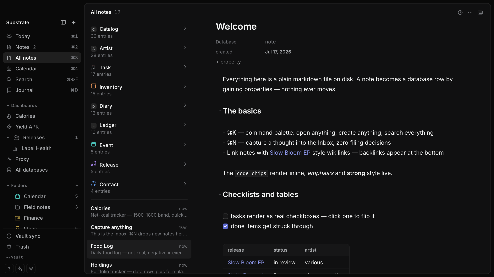
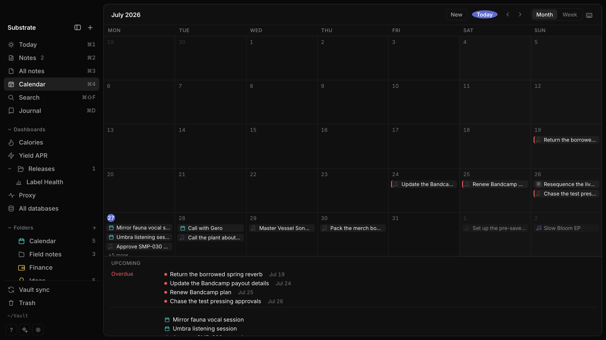
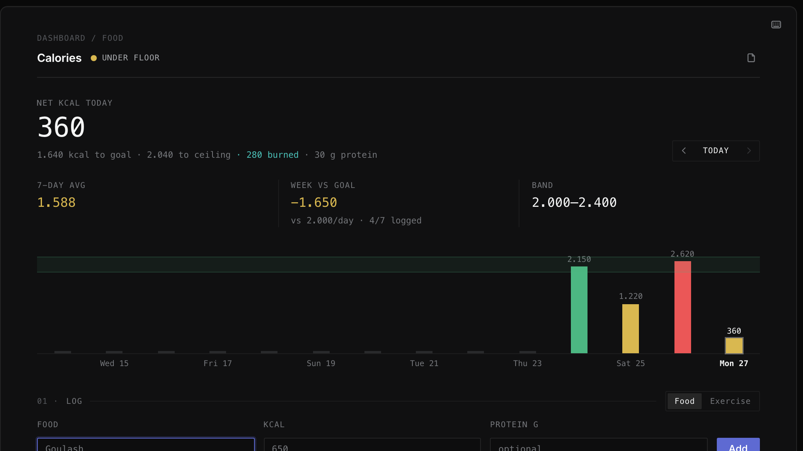
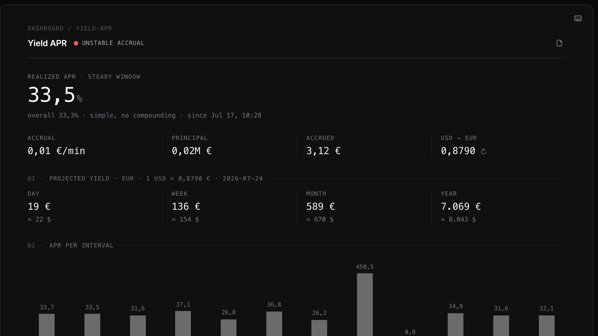
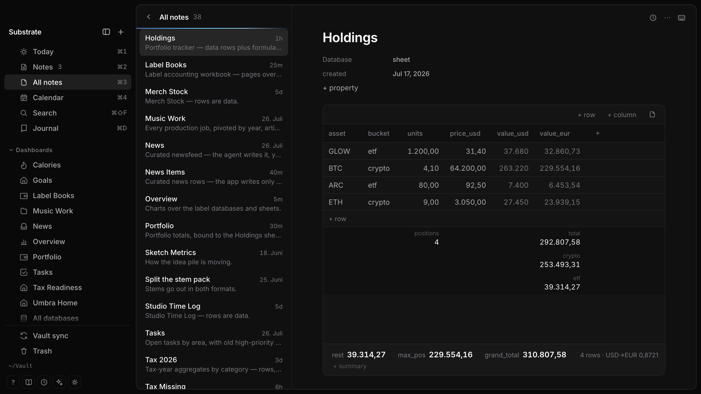

05 / the app
This is Substrate.
A real vault: notes on the left, live-rendered markdown in the middle, properties on the note. The sidebar’s “databases” and “dashboards” are just files like this one, grouped by their type: label.



~/Vault · a working vault · databases in the sidebar, notes in the middle, live-rendered markdown right
Calendar · any note with a date shows up — events, deadlines, journal days; the overdue rail is a saved query
Calories.md · a daily tracker — goal band, week-vs-goal, a log form; the log rows live in a markdown table one file over
06 / surfaces
Dashboards over text files.
Stat cards, charts, live views, a log form — a real dashboard, and every number on it is derived from markdown files on disk. This one tracks yield:

Yield APR.md · realized APR, projected yield, per-interval chart — every number derived from snapshot rows in the file
Where do the numbers come from? Sheets — formula tables in plain text. This is a whole one:
$ cat Finance/Holdings.md --- type: sheet --- ```csv asset,bucket,units,price_usd WORLD-ETF,etf,30,98.5 BTC,crypto,0.08,64200 ``` ```formulas value_usd = units * price_usd total = SUM(value_usd) crypto = SUMIF(bucket, "crypto", value_usd) value_eur = value_usd * FX("USD","EUR") ```
A spreadsheet that is also just a note.
That file is a working portfolio tracker: the rows are holdings, the lines below compute value, totals, and how much is in crypto — SUM, SUMIF, live currency rates, references across sheets. In the app you see a grid and charts; on disk it stays a note you could email to someone.
This layer simply doesn’t exist elsewhere: Notion’s formulas compute one row at a time — anything across rows or tables means rigging relations and rollups, and charts can’t read the result. Here a full spreadsheet engine runs over files grep can read.
SPEC — docs/sheets-spec.md · ENGINE TESTED IN CI
And this is the same kind of file, open in the app — the csv rows become a grid, the formulas become the totals rail underneath:

Holdings.md · the sheet rendered · totals, per-bucket sums and USD→EUR conversion computed from the file, live
07 / files
The files are the app.
No proprietary database underneath — the markdown on your disk is the only source of truth. Substrate is just a fast window onto it. Edit a file in any other app and the change is live before you switch back.
$ cat Contacts/Noa.md --- type: contact role: artwork status: active --- Brief sent for [[Slow Bloom EP]] — stems for the motion piece due Friday. # a text file. also a database row. $ echo "- [ ] send stems to Noa" >> Today.md
Every note is a page anything can open.
That terminal is showing a contact card — and it’s just a text file you could read on any computer made in the last forty years. The labels on top (type, role, status) are what make it a database row. Change the file from anywhere — another app, a script, that echo line — and it’s in Substrate before you switch back.
FOR THE NERDS: FRONTMATTER IS THE SCHEMA, GREP IS A QUERY ENGINE — docs/vault-format.md
08 / agents
Agents don’t get an API here.
They get the files.
No UI-only data, boring parseable formats, external edits picked up live — an agent filing your inbox at 3am is a designed use, not a hack. And once agents can read everything on your machine, a vault that never leaves it uninvited stops being a nerd feature and becomes the point.
Not “AI-powered.” Legible.
There’s no model inside Substrate and no tokens to buy. The claim is stronger and cheaper: the vault is plain text with documented conventions, so any agent — Claude, a cron script, you in a terminal — can read and write it directly.
EVERYTHING THE UI DOES TO YOUR DATA IS ACHIEVABLE BY EDITING FILES.
agent › file today's captures read Inbox/ — 4 untyped notes write type: contact → Contacts/Noa.md write type: release → Releases/Vessel Songs.md write type: task ×2 → Tasks/ vault › watcher: 4 files changed, index live
09 / features
Narrow, but finished.
A smaller surface done properly beats a wide surface at 80%.
SUM, SUMIF, cross-sheet references, live FX. Notion’s formulas stop at one row; these don’t.10 / principles
Built on a few stubborn ideas.
Files are the only truth.
Export a PDF to send someone, sure. But you’ll never need to export your data — it was never inside.
Nothing phones home.
No account, no telemetry, no cloud — your vault never leaves your machines uninvited. The only outbound calls are features you can see: currency rates for sheets, titles for pasted links.
Speed is a feature, not a benchmark.
The app should feel like a room, not a machine.
Agent-native, by design rule.
Boring formats, documented conventions — the agent uses the same door you do.
Built for one person first.
Not a product committee — a daily driver. Every feature exists because someone needed it that week.
$ don’t trust the copy — read the source
11 / switching
Leaving Notion?
The databases, the views, the everything-in-one-place — minus the loading spinners, the vendor account, and the API between your agent and your own notes.
1
Export from Notion
Settings → Export all workspace content (markdown & CSV).
2
Drop it in your vault
Pages are markdown already — notes the moment they land. Database rows arrive as CSV; typing them as frontmatter is the real migration.
3
Migrate one database at a time
Lane by lane — each database lands whole before the next begins. No big-bang cutover.
honesty clause: Notion is still better at real-time multiplayer collab. Substrate is single-user by design — that’s why it’s fast.
12 / price
Free and open source. That part’s simple.
Same app, same features, your call. A donation nag may appear someday, rarely — one euro makes it disappear forever, and with the source right there you can always build the version without it.
13 / faq
Fair questions.
Where is my data, exactly?
In ~/Vault (or any folder you choose): ordinary text files you can open in anything, plus a small .vault/ folder holding your database settings and saved views — also plain text. You can read all of it right now, no Substrate required.
Isn’t this just Obsidian?
Closest neighbor, different bet. Obsidian answered “who owns the files?” — Substrate starts there and asks what the files can do. Four differences that compound:
core, not plugins. In Obsidian, structure is assembled — Bases for tables, plugins for sheets and dashboards, each with its own format and update cycle. Here typed databases, sheets, and dashboards are one native core: one documented convention, no stack to keep standing.
computation. Sheets are formula tables in plain text; dashboards bind stat cards, charts, and live views to the results — a spreadsheet-and-dashboard layer Bases doesn’t reach. Your finances, your release pipeline: computed, not just collected.
agent-first, not agent-tolerant. Both are “just files,” but here the conventions are designed to be operated: documented spec, boring YAML, external edits as the designed path — the index is live before you ⌘-tab back.
open source. Obsidian is free but closed. Every claim on this page is checkable in the repo.
What happens if the project dies?
Nothing. Your vault is markdown — every editor on earth opens it. That is the whole point of building on files instead of a database.
Does it phone home?
No telemetry, no analytics, no account, no update pings you didn’t ask for. Two boring exceptions, both user-visible features: sheets fetch currency rates, and pasting a URL fetches its title. The source is open so you don’t have to take our word for it.
Is the App Store build different?
No — same app, same features. It’ll pay for the signed one-click install and support development. The listing will say exactly this.
iPhone? Windows? Linux?
macOS first. An iOS build is in active development — it syncs directly to your own Mac, no third party in the path; end-to-end encrypted relay sync is the committed design. Windows/Linux aren’t planned — the roadmap follows its owner’s needs, honestly stated.